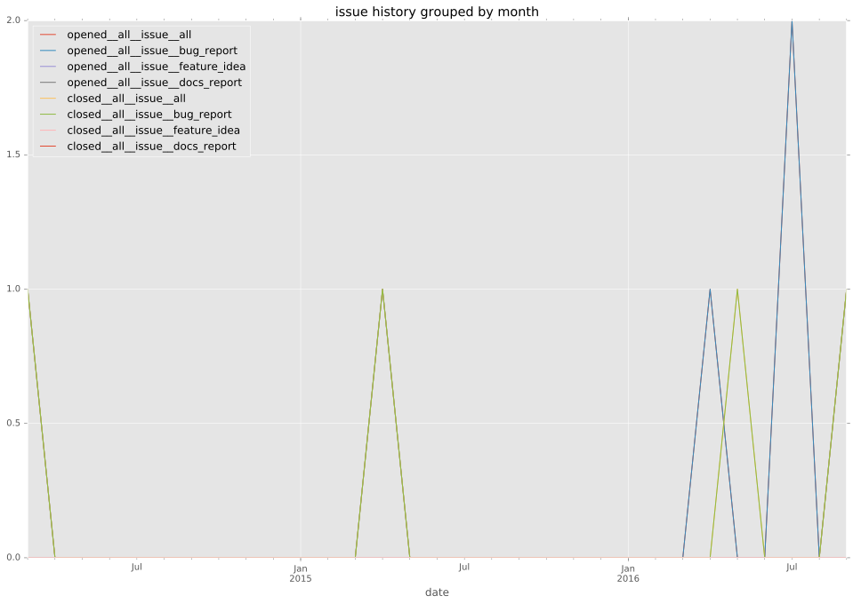
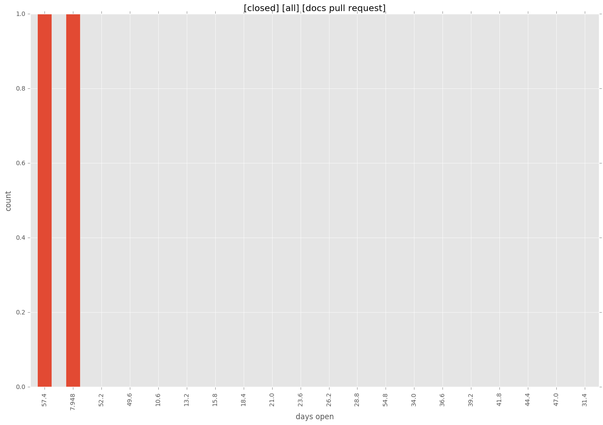
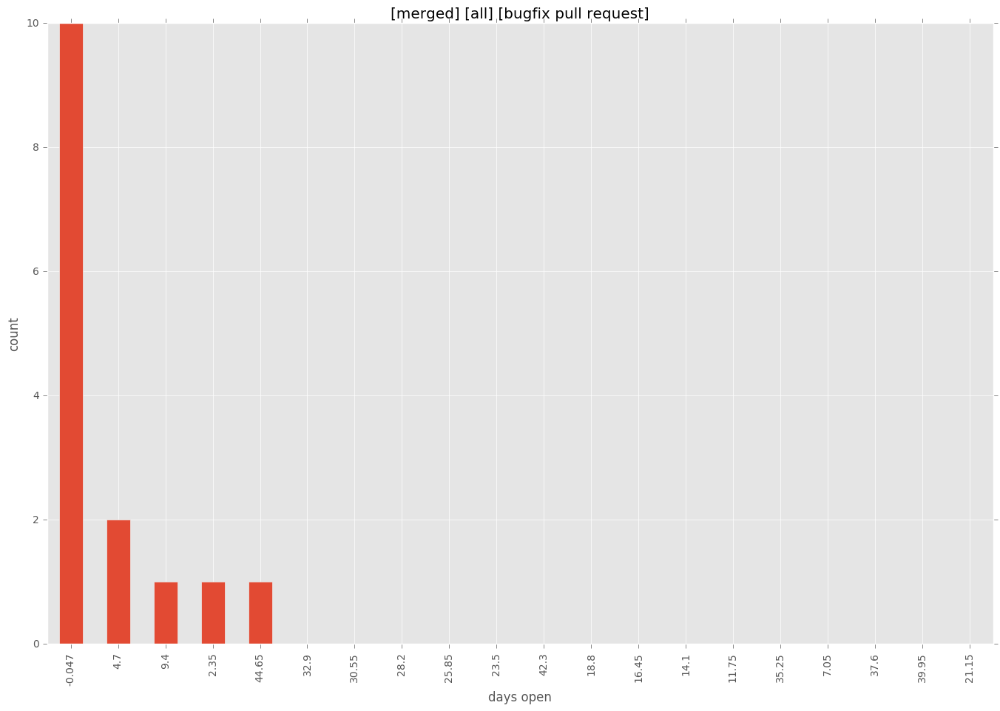
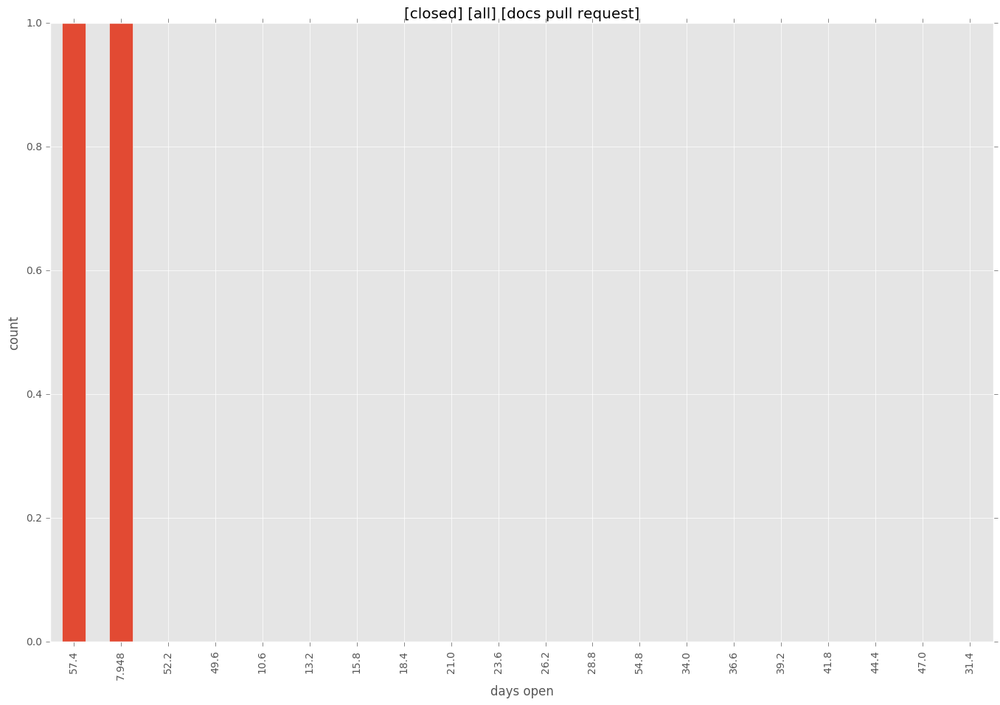
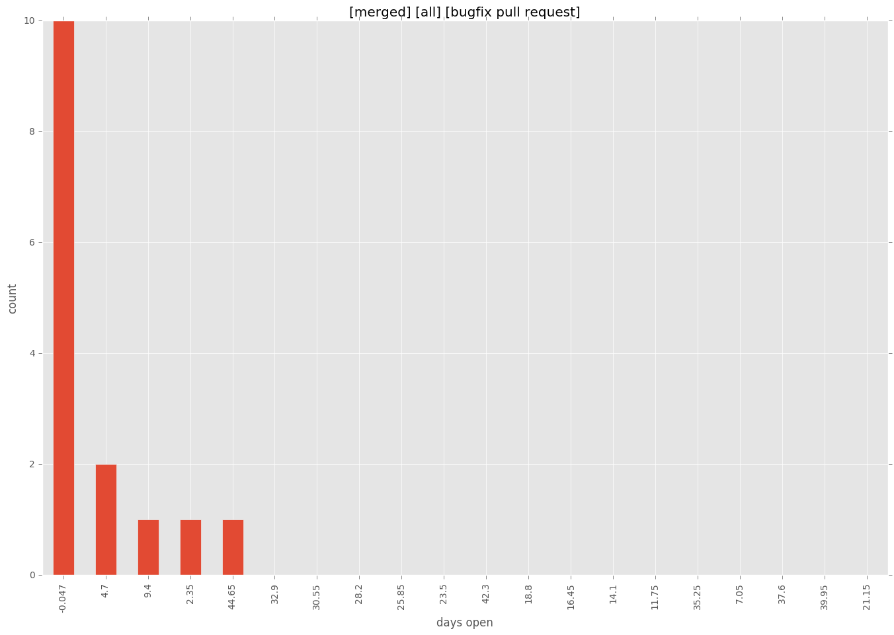

total issue counts
bugfix pull request: 50
pullrequest: 86
docs pull request: 2
feature pull request: 34
issue: 6
bug report: 6
issue history

days open by issue type
feature pull request
count: 51
std: 122.121639778
min: 0
max: 592
median: 4.0
mean: 44.1568627451
all
count: 121
std: 87.4581655207
min: 0
max: 592
median: 0.0
mean: 25.305785124
pullrequest
count: 0
std: nan
min: nan
max: nan
median: nan
mean: nan
docs pull request
count: 3
std: 30.0222139979
min: 8
max: 60
median: 60.0
mean: 42.6666666667
bugfix pull request
count: 63
std: 46.7817650174
min: 0
max: 356
median: 0.0
mean: 10.6031746032
issue
count: 0
std: nan
min: nan
max: nan
median: nan
mean: nan
bug report
count: 4
std: 7.0
min: 0
max: 14
median: 0.0
mean: 3.5
closures grouped by total days open
 


